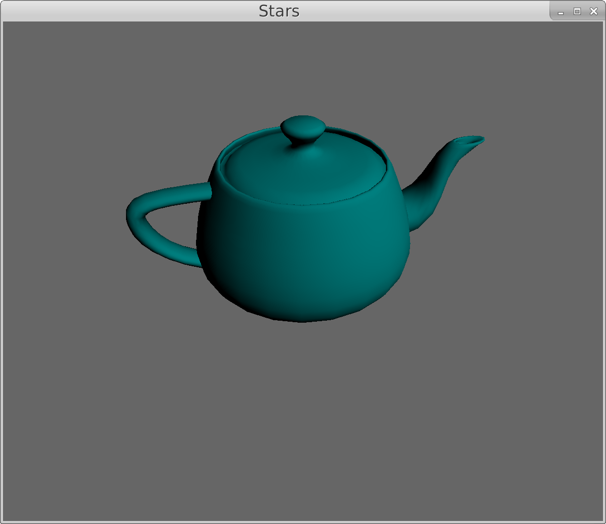
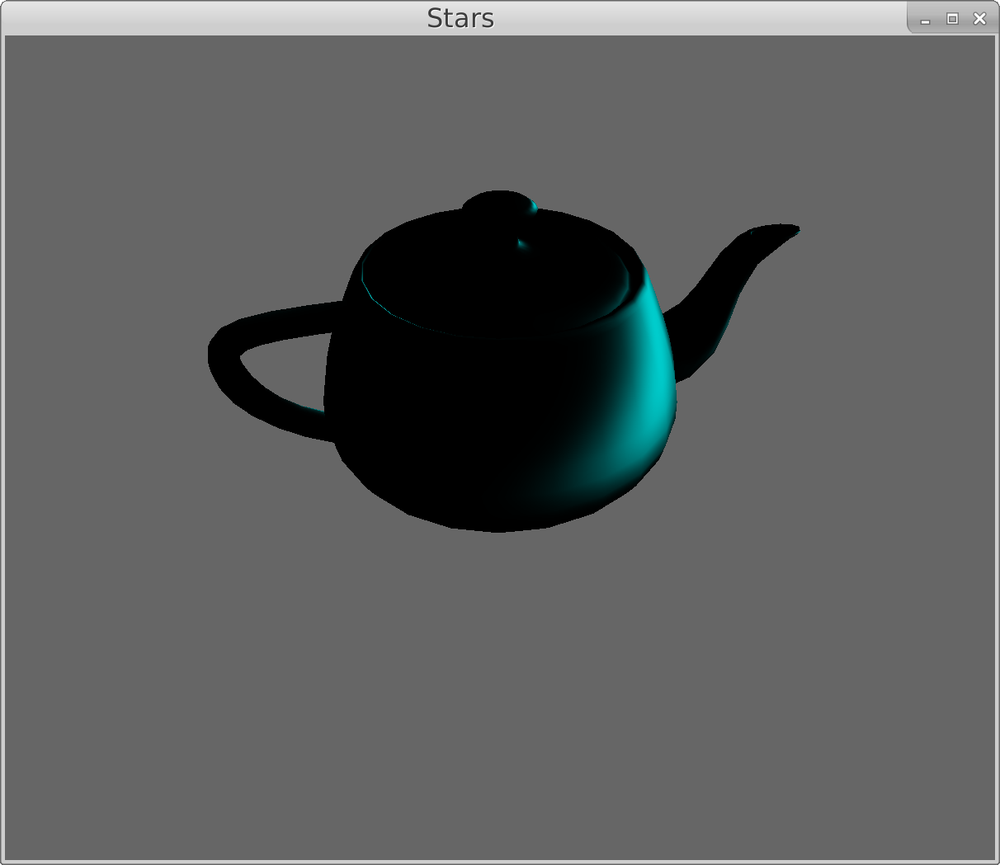
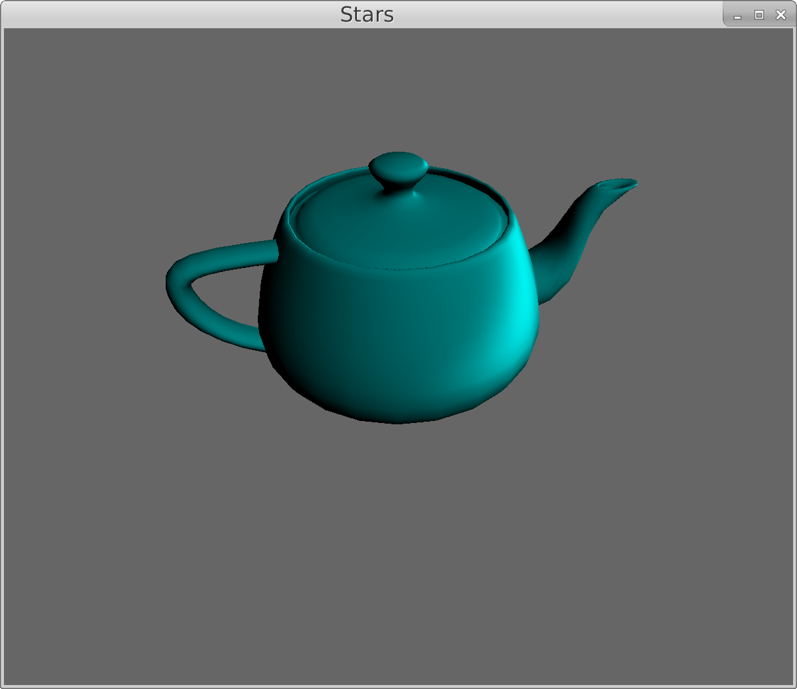
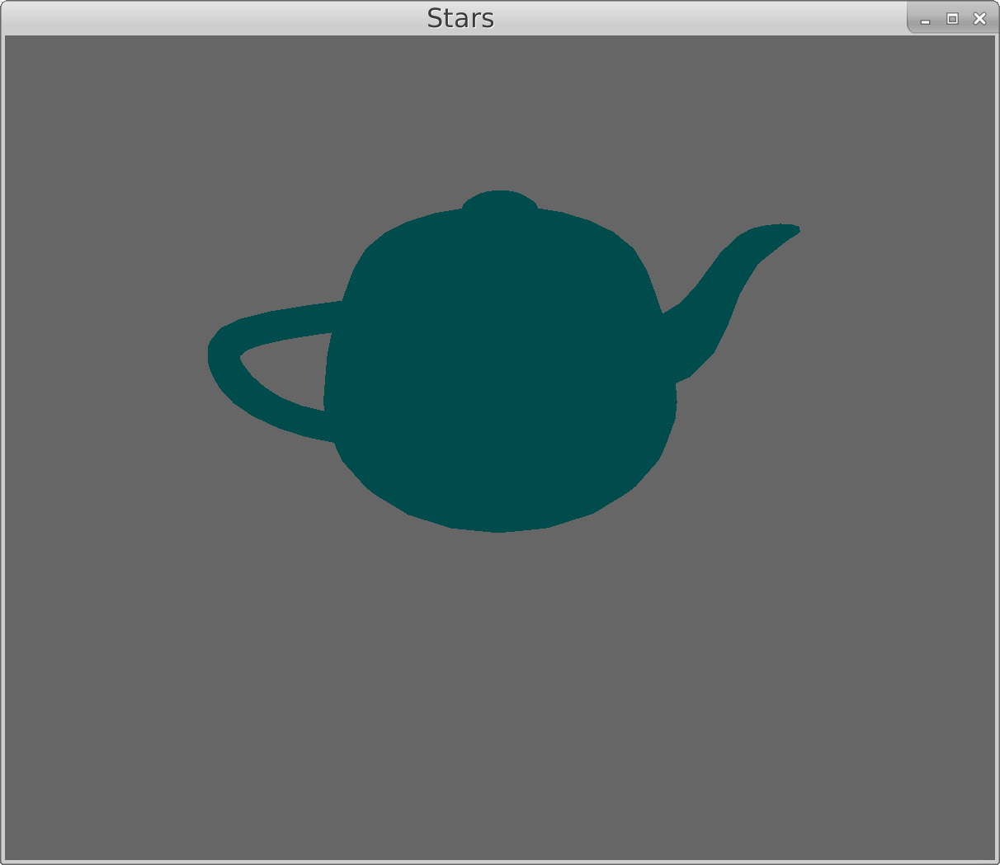
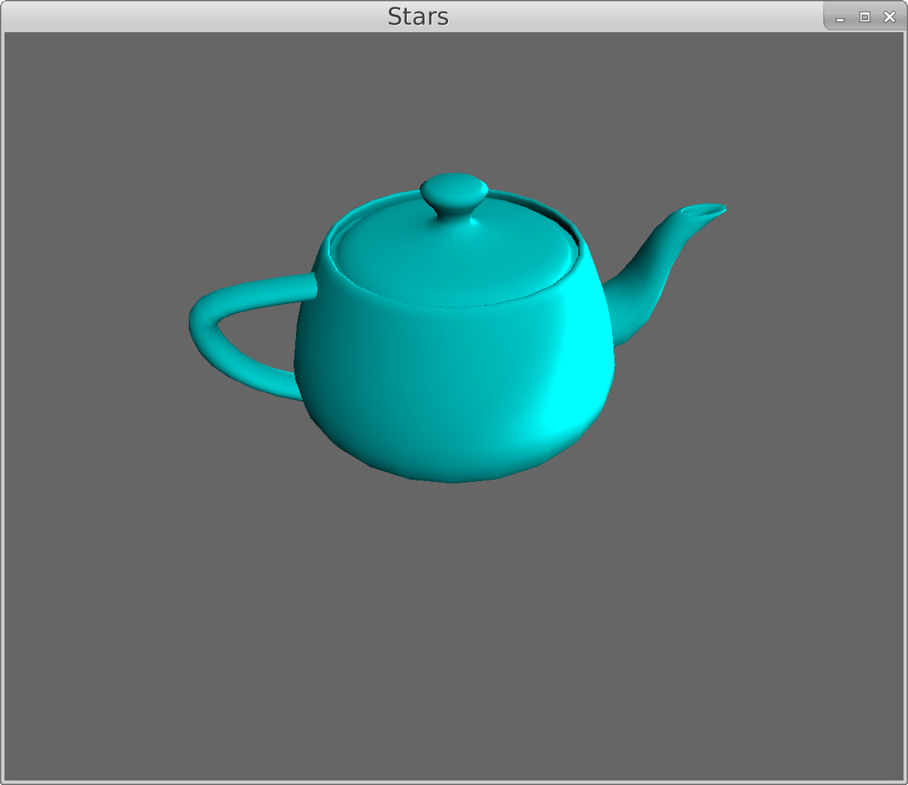

Stars Finale
Fri, Aug 25, 2017I’ve been working with graphics on a project dubbed ‘Stars’. This is its last hurrah!
Without further ado, here’s a bourgeois pig:
(It’s bourgeois because it’s shiny and therefore expensive.)
So the lighting here comes in three parts. The first is what is called diffuse lighting. It’s the kind of light that bounces off a surface equally in every direction.
This is the bit of the fragment shader that renders diffuse light, i.e. the code run for each pixel on the GPU:
// pretend you are given these three vectors
vec3 position;
vec3 normal;
vec3 light_direction;
// calculate how light or dark this pixel should be
// by combining the normal and light direction
float brightness = dot(normal, light_direction);
// set the color between black and cyan
outColor = mix(vec3(0, 0, 0),
vec3(0, 0.5, 0.5),
brightness);
This does render a teapot! But it’s a little dark: the backside is completely black and it looks kind of matt or chalky.
To make it look less chalky, we’re going to add a specular component. This is the kind of light that reflects unevenly: instead of the diffuse light that spreads out everywhere equally, the specular light highlights spots where the light is shining directly.
// do some calculation to get the direction
// and intensity
vec3 camera_direction = normalize(-position);
vec3 half_direction = normalize(
light_direction + camera_direction);
float specular = pow(
dot(half_direction, normal)), 16.0);
// set the color to vary with specular
outColor = specular * vec3(0, 0.5, 0.5);This gives us the shiny part of light!

Combining these two lighting methods, we get a fairly well-lit teapot:

But it’s still strangely black in some places! In reality, there is ambient light everywhere, bouncing off of walls and floors.
Unfortunately, reflected light like that is really computationally intensive to calculate, so there’s a widespread hack to add ambient lighting:
outColor = vec3(0, 0.3, 0.3);
Yep, we just add a lighter color everywhere. And now we finally get a decently lighted teapot!

And that’s all there is to basic shading! I also wanted to do some cel-shading — cartoon-like graphics. This turned out to be super easy, and took one line of code:
brightness = max(ceil(brightness * 4), 0.0);So here are two cel-shaded teapots! (Sorry I know they skip sometimes.)
I’m pretty happy with how this project has gone. I’ve definitely learned a lot about graphics, and even more about Pony. (The entire project is written in Pony.)
Feel free to check out the source code on Gitlab!